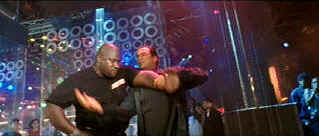

| Exit
Wounds/D+,A |
| Warner/2001/101/ANA
2.35 |
Does the title refer to what audiences must have
felt on leaving the theater? This is really an inept attempt at
providing a story line for fading action star Steven Seagal to walk, kick, smirk and crunch
his way through. The total lack of logic and reason of the script suggests that the
writers were only concerned with cutting to the next car chase or kick
fight.
Exit Wounds starts out with a huge set piece
concerning an attempt on the US Vice president's life. Making a gun
control speech in Detroit, the VP runs into some unexpected traffic when
leaving the city. Thank heaven for cops like Orin Boyd. Boyd isn't
supposed to be there to save the day, but that doesn't stop him. He's a
one-man army, a killing machine ready to sacrifice life, limb, and job
security to throw himself in harm's way. The opening turns out to to be
the highlight of the film. The explanation for the events is so lame as
to insult almost any audience.
 |
| The
Seagal waltz. ©Warner |
Boyd is rewarded for his heroics with a transfer
to the worst precinct in the city. He makes his presence immediately
felt with his winning personality. But Boyd's got a good sniffer and he
knows something's rotten in the 15th. There's a drug plot, a fast
talking dealer who runs a fancy night spot and drives exotic cars, a
partner he can trust and lots of antagonism from the back room boys in
blue. Boyd is not to be stopped, by bullets, politics, dirty cops or
street toughs.
Steven Seagal maintains an expression chipped
from stone throughout the various nonsense. He's joined by hard
staring rap star DMX, motor mouthed Anthony Anderson, and straight-laced
Isaiah Washington.
Andrzej Bartkowiak
directs with little concern for story. The former cinematographer makes
everything look snappy at least. I may not be a fan of rap music,
but the hip-hop driving beat was the best element in this senseless
exercise.
Quite a beautiful transfer. Rich, fully saturated
color and sharp detail displayed consistently throughout the program.
Night sequences pop off the screen with admirable gloss. No
artifacts in evidence. The transfer handles all the motion and
explosions with panache. The bass rocks and the action is whipped about
all over the home theater in a multidirectional assault.
|
|
|
|

Ghost
Dog: Way of the Samurai

Ancient Japanese samurai tradition compared to new world Italian
mobsters filtered through the imagination of Jim Jarmusch. Forest Whitaker is outstanding.

Click on the DVD MIA symbol for
profiles of DVDs missing in action.
Add films to the DVD MIA Master List by filling out
a simple form. Click Here

The
Movie Poster Archive include extensive poster images from the films of stars like Susan Hayward,
Kirk Douglas, Katharine Hepburn and many more. Our featured star is Robert Mitchum

Selections from the Feature Archive
include articles on Akira Kurosawa, Frank
Darabont, Blonde Bimbos, Hollywood Street Gangs, or Vietnam: The
Hollywood Pariah, and many more....

Screen legend Gary Cooper
won two Academy Awards© as Best Actor during a career that included 114 Hollywood films. Click on
his image for a bio and poster images. |